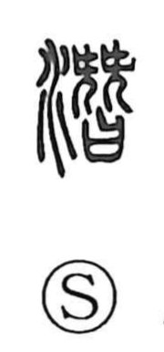

潜

Uncategorized
Kun: hisomu, moguru, kuguru, hisoka ni | On: sen
to dive ・ to submerge ・ to hide oneself ・ to pass under ・ secret
Explanation
A phono-semantic graph: the water element indicates the aquatic setting, while the right-hand component 替 serves as the phonetic, as seen in 僭 (sen), and also carries a sense of secrecy. Shirakawa explains 替 through a ritual image—two long ceremonial hairpins placed upon a sacred receptacle for written petitions—an act of covert cursing and slander, hence the nuance of doing something hidden from view. The older form 潛 already bore the on-reading sen. Joined to water, this idea of secrecy yields the core sense of slipping beneath the surface: to go underwater unseen, to dive or pass under, and by extension to hide oneself, to act quietly and in secret, even evoking depth.